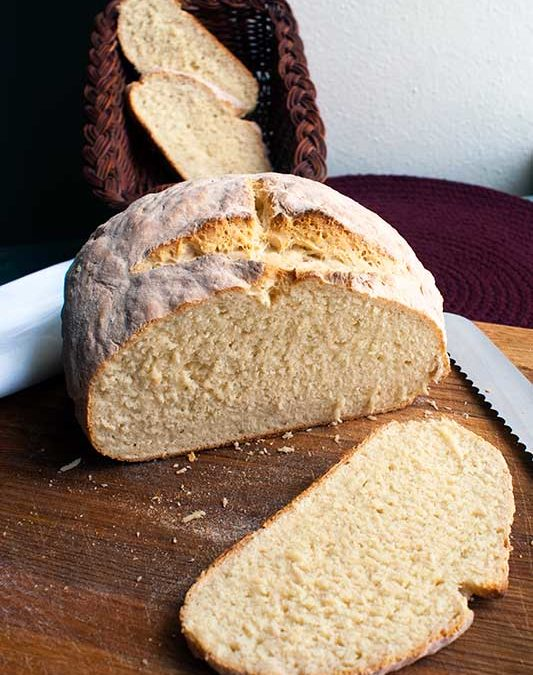

Traditional Irish Soda Bread

Irish soda bread is extremely easy and quick to make.
It traditionally only has three key ingredients: flour, baking soda, and buttermilk.
Serve it as a side or enjoy it alone!
Yield: 8 servings
Prep Time: 10 minutes
Cook Time: 30 minutes
Total Time: 40 minutes
Ingredients
- 3 2/3 cups all-purpose flour (plus a bit extra for dusting surfaces)
- 1 teaspoon kosher or sea salt
- 1 teaspoon baking soda
- 1 3/4 cups buttermilk
- Nonstick cooking spray
Directions
- Heat oven to 425 degress F. Oil a medium cast iron skillet and set aside.
- Mix flour, salt, and baking soda together in a mixing bowl. Make a well in the center and
pour in the buttermilk. Mix together using your hands until a soft dough forms. The
dough should be failry wet (like biscuit dough), but not too sticky.
- Turn the dough out onto a lightly floured surface and knead 3-4 times. Shape the dough into
an 8-inch flat circle. Place the loaf on the prepared cast iron and cut a cross from edge
to edge about 1/4 inch deep into the top using a sharp knife dusted in flour.
- Bake in heated oven for 25-30 minutes, or until golden or when the bread sounds hollow when tapped.
- Transfer to a wire rack and cool slightly.
- Serve warm with plenty of butter, apple butter, or as a side to mop up juices.
- Share and enjoy!